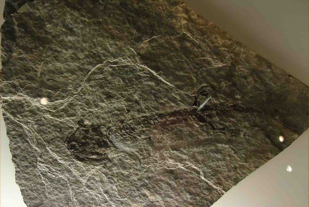

古代的兩棲類
從水中登上陸地可能是脊椎動物演化的里程碑。 然而，我們對於這一段的演化過程卻所知不多。 幸好有關古代兩棲類的新發現才讓我們有進一步的瞭解。


盤蜥螈的化石
距今兩億七千萬年前
這具盤蜥螈化石已有二億七千萬年之久，它屬於後來演化成爬蟲類的古老兩棲類之一。 它與較大的西蠓螈是近親。
從水中登上陸地可能是脊椎動物演化的里程碑。 然而，我們對於這一段的演化過程卻所知不多。 幸好有關古代兩棲類的新發現才讓我們有進一步的瞭解。
這具盤蜥螈化石已有二億七千萬年之久，它屬於後來演化成爬蟲類的古老兩棲類之一。 它與較大的西蠓螈是近親。